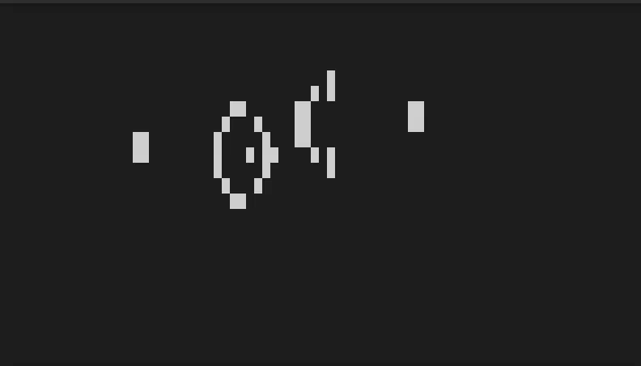
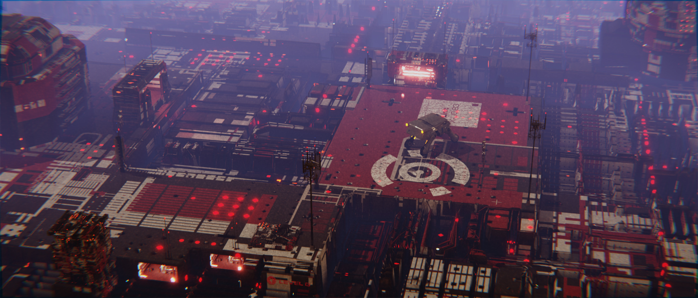
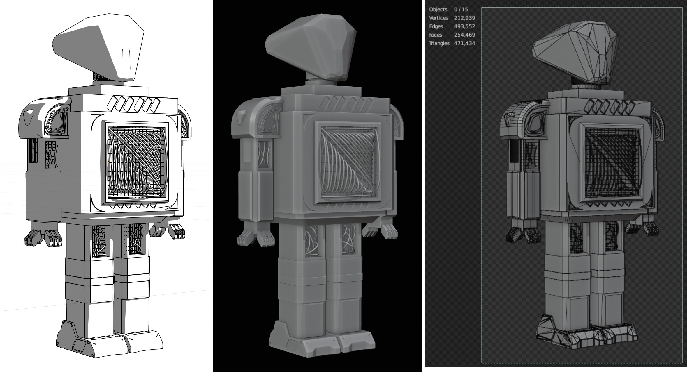

Projects
My best projects are showcased here. If you'd like to see more, please check out my GitHub.
Conway's Game Of Life in C
I created Conway’s Game of Life in C using the Ncurses library. Initially, I thought implementing the neighbor algorithm would be challenging, but as I started coding, it turned out to be much easier than I expected. I realized that sometimes, the key to solving problems is just to dive into the code—especially when thinking through things on paper doesn't help.
I first came across Conway's Game of Life in a Veritasium video and became really interested in it. Later, I got more involved in building my own version after seeing a Reddit post by a user,u/lonelyroom-eklaghor, who mentioned that it’s a great programming project for beginners. Source Code
Old Renders from 2022
 I started using Blender in 2021, initially focusing on hard surface modeling. I learned a lot from YouTubers like Josh Gambrell, Ponte Ryuui, and Chipp Walters. Unfortunately, many of my project files and photos are lost, but I managed to recover a few renders from the Perfect Comber Ever Discord server, which was pretty active during the lockdown.
The first image is a 3D model I created based on the drone from the movie Oblivion. The style is similar to Blender Bros, but I hope to develop my own style in the future. The second image is something I made following a tutorial by Chipp Walters. It was created using displacement maps, and I thought it turned out really cool. The last image, while not my proudest work, was enhanced by Chipp Walters' SketchStyle add-on, which gave it a unique touch. I took a break from Blender in 2022 to focus on other things.